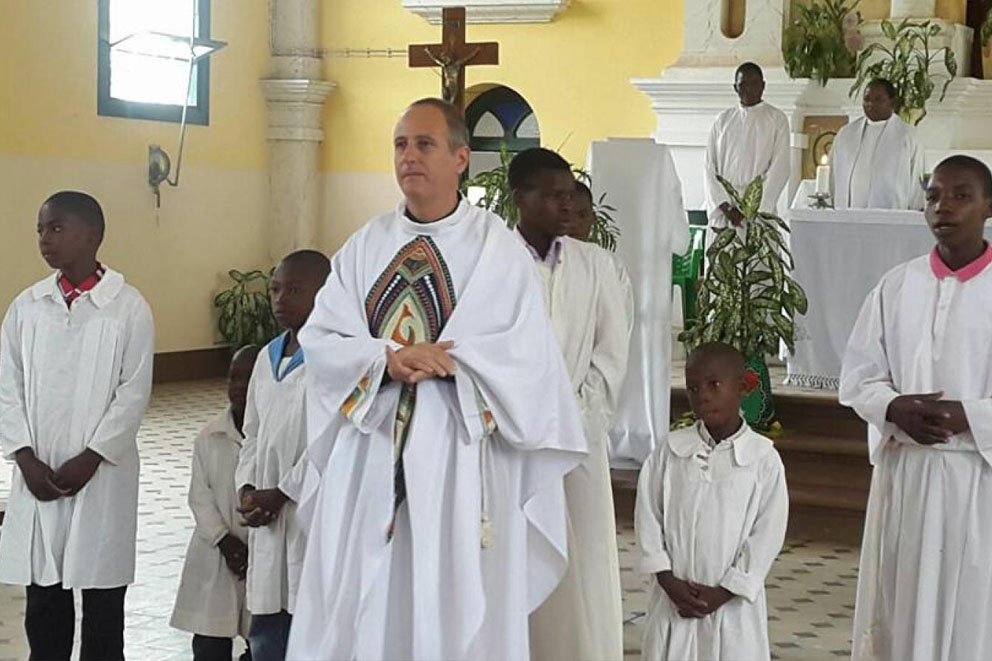
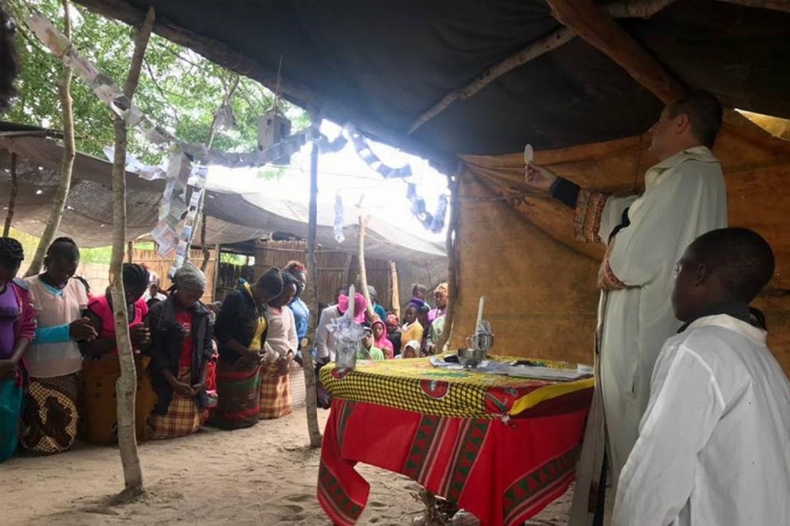
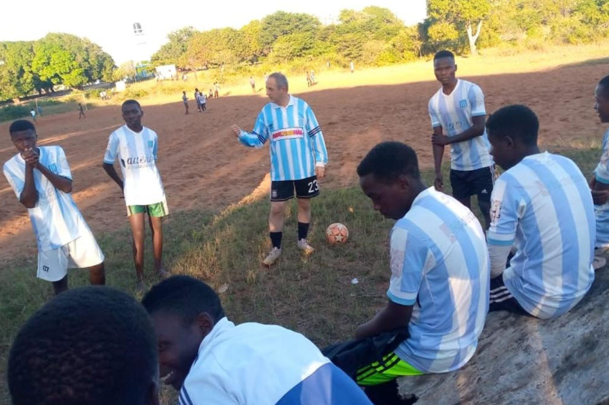

JUAN GABRIEL ARIAS, EL HOMBRE DETRÁS DEL RACING DE MOZAMBIQUE
A poco más de 9000 kilómetros de Argentina, la Mozademia despierta las mismas pasiones que su hermano mayor de Avellaneda. Repasamos la historia de un sueño que se convirtió en realidad y es mucho más que un club.

MOZAMBIQUE es uno de los países más pobres del mundo. La desigualdad, la baja esperanza de vida, la falta de trabajo y de futuro lo convierten en un lugar hostil para la mayoría de sus habitantes. En el año 2019 la esperanza de vida de las mujeres fue de 63,67 años, mayor que la de los hombres que fue de 57,78 años.
Si la comparamos con las mediciones del año 2000 mejoraron y mucho: ese año el promedio de las mujeres era de 51,03 años y el de los hombres 46,78 años. La economía del país se basa en la agricultura, con un creciente sector turístico e industrial, centrado principalmente en alimentos y bebidas, fabricación de productos químicos y la producción de aluminio y petróleo.
Para hacerse una idea de lo que es vivir en Mozambique, el alimento es un bien preciado y muchos mozambiqueños solo tienen acceso a una comida al día. En ese entorno muchas veces faltan los hombres adecuados para que las cosas mejoren.
“Hay hombres que luchan un día y son buenos. Hay otros que luchan un año y son mejores. Hay quienes luchan muchos años y son muy buenos. Pero hay los que luchan toda la vida: esos son los imprescindibles”, supo decir el dramaturgo alemán Bertolt Brecht.
Juan Gabriel Arias llegó a Mozambique en el año 2000: "Vine por tres meses y me quemó la cabeza, me encantó el pueblo, su gente, vi las posibilidades que había para trabajar. Desde ese momento empecé a prepararme para instalarme definitivamente”.
Larcio fue uno de los dos primeros chicos mozambicanos en recibir la posibilidad de estudiar en la UCA. Llegó con un compañero llamado Jossias, de quien perdió el rastro. Con el tiempo, llegaron cinco más. Las últimas fueron dos mujeres, Carolina y Deolinda, que lo hicieron en enero de este año. Una de las condiciones que imponen para que vengan a estudiar es conseguir “padrinos” que les den alojamiento y solventen sus gastos cotidianos. A Larcio y Jossias los recibió el matrimonio de Julián Weich (el conductor de tevé) y su esposa Bárbara. “Al principio vivi con una familia peruana cerca de la parroquia Natividad de María, la de Barracas, donde había estado el padre Juan Gabriel. De hecho, allí y en Mozambique fui monaguillo suyo. Después Julián y Barbie nos encontraron un departamento en Honduras y Scalabrini Ortíz, que nos prestaron. Ya conocíamos Buenos Aires, sabíamos las calles. Teníamos independencia y nos pudimos dedicar al estudio. Los fines de semana nos llevaban a su casa en un country. Fueron nuestra familia en Argentina.

La ciudad de Mangundze está a 240 kilómetros de la capital de Mozambique, Maputo. Allí Juan Gabriel desarrolla su labor social día a día. Su amor por Racing Club se ve a simple vista, más allá del tatuaje de Jesús en su brazo derecho con el escudo de su amada Academia, la parroquia de Mangundze lleva los colores albicelestes.
Solo se trata de vivir (a veces sobrevivir).
-Para los que no conocemos o no sabemos, ¿cómo es la vida en Mozambique?
-Te respondo con un dato estadístico: es el país con mayor tasa de suicidios entre chicos de 15 a 25 años, porque no hay expectativas para ellos. Es muy difícil estudiar, es muy difícil conseguir trabajo y las condiciones de vida son complicadas. La salud, la alimentación, el agua, todo depende de donde vivas, es distinto hacerlo en la ciudad que en el campo. El día a día de Mozambique es complicado.
-¿Cuál fue tu idea al fundar Racing de Mozambique?
-La idea es ayudar a los jóvenes, promover el deporte y para algunos incluso tener una salida laboral, que puedan seguir progresando en otros clubes. Hoy Racing de Mozambique es amateur, está en la Segunda División de Mozambique -Moçambola- que prácticamente es toda amateur. La idea es ir promoviendo jugadores y trabajar con los jóvenes. Lo hago en la misión en la parroquia a nivel mucho más amateur que en que en la ciudad, en Maputo con Racing de Mozambique oficial es a nivel clubes y con más probabilidades de ser profesional.
-¿Cómo fueron los inicios del Racing de Mozambique?
-Acá siempre promoví el fútbol, siempre jugué con camisetas de Racing. Tengo un amigo, que es como si fuera mi hermano, en la capital Maputo a 240 kilómetros de dónde estoy; él fue jugador de fútbol y ahora es empresario. De hecho, fue presidente del club Costa del Sol, que es uno de los más grandes de Mozambique. Él quería fundar un club, con una intención social, para ayudar a los jóvenes. Él quería ponerle Benfica, pero lo convencí de llamarlo Racing. De hecho, yo lo conocí de una manera muy especial: en ese momento estaba en la comisión directiva y había un jugador de Mozambique llamado Clesio -tenía 18 años en ese momento- que ya había debutado en la selección mayor y era el goleador de la sub-20. Mi intención era traerlo a Racing. Cuando empiezo a averiguar quién lo representaba doy con el que con el tiempo se convirtió en mi amigo, Bruno.

-¿Y cómo siguió?
-Ahí empezamos a cambiar emails y a él le quemó la cabeza que un cura sea dirigente de fútbol. Él no es religioso, es agnóstico, pero le llamó mucho la atención que ese cura también trabajaba en Mozambique, en su país. Me sorprendió que conociera mucho de Racing, tenía conocimiento de los jugadores y empezó a preguntarme por Fariña, Zuculini, De Paul, distintos jugadores de las inferiores que él conocía perfectamente. Siempre tuvo afinidad con el club y, de hecho, queríamos llevar jugadores a probarse. Cuando fue a Argentina visitó el club y el predio Tita. No es que decidió llamarlo Racing porque sí, estaba al tanto de todo, tiene cariño por la Academia y se convirtió en hincha.
-¿Cómo fueron los primeros momentos? Muchas veces los sueños se construyen con dinero.
-En los inicios lo bancó todo él que lo hizo desde cero y todavía lo sigue bancando bastante. Además hay un grupo de amigos que estamos tratando de ayudar, por ahora es muy difícil el tema económico. Hay otros clubes en la categoría que si son profesionales, entonces eso también complica, porque por ahora Racing Mozambique no tiene casi ingresos.
-Esa diferencia complica la competencia.
-Sin duda y además pasa como en España, donde hay clubes grandes como Costa Del Sol como Black Bulls que tienen un equipo B que juega en la Segunda División, que tienen jugadores profesionales, los que no juegan en la primera o son jugadores que están empezando a jugar lo hacen ahí.
Más allá de que la actividad social de ayuda a la población se realiza en la parroquia de Mangundze, Juan Gabriel cuenta: "En el club tratamos que los chicos tengan una comida al día; muchas veces nuestros jugadores llegan sin haber comido en todo el día, llegan a la mañana sin haber desayunado o a la tarde, quizás ni almorzaron. Se trata de asegurarle una comida antes entrenar, tratar de ayudarlos en su desarrollo, pero el trabajo social fuerte está en la misión".
-¿Cuál es la colaboración con Racing de Avellaneda?
-Racing de Avellaneda nos ayuda con la ropa para vestir al equipo, pero aparte también “Locademia”, el local de ropa de Racing, siempre me guarda cosas que no pueden salir a la venta o tienen algunas fallas y las envían para acá. Cuando les regalo camisetas de Racing a los chicos se vuelven locos, les parte la cabeza y está muy bueno.
Lionel Messi, es más que fútbol
Juan Gabriel Arias es apasionado por lo que hace, por lo que da, en ayudar a aquellos que más lo necesitan. Los hombres como él también deben ser ayudados.
“Tenemos muchos proyectos en la misión, uno de ellos y quizás el más importante es el de los desayunos que damos en las escuelas primarias. Gracias a la ayuda de la Fundación Messi, que hace seis años viene apoyando este proyecto. Son 40 escuelas y 3 orfanatos en los que servimos desayunos, unos 15000 chicos todos los días. Es un proyecto que cambió mucho la vida de ellos, son chicos que no están acostumbrados a desayunar, no entraba el desayuno en la idea de ellos, muchos comen una vez por día nada más, le estás duplicando su alimentación, además cómo se sirve en la escuela mejoró también la calidad escolar. Mejoraron las notas de los chicos, terminó con la deserción escolar porque no quieren faltar a la escuela para no perderse el desayuno, cosa que los hacen llegar temprano. Más allá de ayudar en la nutrición, también lo hizo en el desarrollo escolar, aumentó la matrícula porque los chicos que no estaban en la escuela empezaron a ir para poder desayunar todos los días”, profundizó.